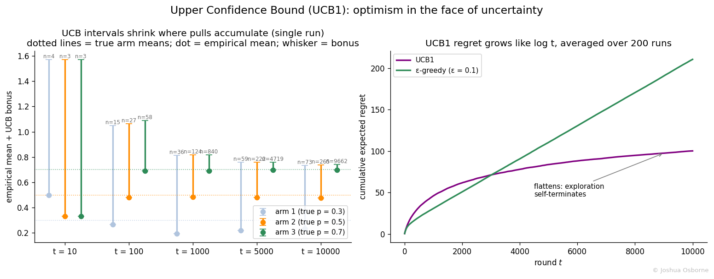

Contents
Upper Confidence Bound (UCB1) solves the multi-arm bandit by acting on optimism: essentially, this algorithm will pull an arm either because an arm is performing very well or if it “feels” as if an arm has not been explored thoroughly. The exact formulation of this will be discussed down below.
Motivation
The weakness of the Epsilon greedy algorithm is that its exploration is blind: you keep pulling the best arm all the time except when you pull a value below or equal to epsilon without any worry about how often you’ve sample a distribution. This means that it requires you to fine tune your epsilon to get the best results. UCB1 (Auer, Cesa-Bianchi, Fischer, 2002) removes both problems with one idea, often called optimism in the face of uncertainty: treat every arm as if its true mean were the best value still statistically plausible given the data. Plausibility is quantified with a confidence interval built from Hoeffding’s inequality (see Hoeffding’s inequality). So exploration is driven by how uncertain we are about each arm. The payoff is a cumulative regret that grows like \(\log T\) instead of linearly, with no tuning parameter at all.
Formal Definition
Pull each arm once to initialize. Then at every round \(t\) (this is the total number of pulls), compute for each arm, \(i\), the UCB index
\[\text{UCB}_i(t) = \hat{\mu}_i + \sqrt{\frac{2 \ln t}{n_i}}\]
and pull the arm with the largest UCB index. The first term favors arms that have performed well (exploitation); the second grows with total time but shrinks with each pull of arm \(i\) (exploration). From here you then need to update that arm’s running mean, pull count, and repeat. To update the running mean it is simply:
\[\hat{\mu}_i \leftarrow \hat{\mu}_i + \frac{r - \hat{\mu}_i}{n_i}\]
Where r is the reward and n is the number of pulls for that given arm. The algorithm is fully deterministic given the observed rewards.
Notation
| Symbol | Type | Meaning |
|---|---|---|
| \(K\) | integer | number of arms |
| \(\mu_i\) | scalar | true mean reward of arm \(i\), in \([0, 1]\) |
| \(\mu^*\) | scalar | mean of the best arm, \(\max_i \mu_i\) |
| \(\Delta_i\) | scalar | suboptimality gap of arm \(i\), \(\mu^* - \mu_i\) |
| \(\hat{\mu}_i\) | estimator | empirical mean reward of arm \(i\) from pulls so far |
| \(n_i\) | integer | number of times arm \(i\) has been pulled |
| \(r_j\) | random variable | reward on pull \(j\), bounded in \([0, 1]\) |
| \(t\) | integer | current round number |
| \(T\) | integer | horizon, total number of rounds |
| \(u\) | scalar | half-width of a confidence interval (the bonus) |
| \(\delta\) | scalar | allowed failure probability of one confidence bound, in \((0, 1)\) |
| \(\text{UCB}_i(t)\) | scalar | index of arm \(i\) at round \(t\): \(\hat{\mu}_i + u\) |
| \(R(T)\) | scalar | cumulative expected regret after \(T\) rounds |
Key Equations
Derivation 1: the bonus term from Hoeffding’s inequality
Step 1. Hoeffding’s inequality: if \(r_1, \dots, r_n\) are independent random variables bounded in \([0, 1]\) with true mean \(\mu\), then the empirical mean \(\hat{\mu} = \frac{1}{n}\sum_j r_j\) concentrates around \(\mu\):
\[P\left(\mu \geq \hat{\mu} + u\right) \;\leq\; e^{-2 n u^2}\]
\(u\) is the margin, it is basically how much error you’re willing to tolerate between your true and empirical mean. So the equation above can be read as: the chance that the true mean exceeds the empirical mean by more than \(u\) decays exponentially in both the sample size and the squared margin. The exponential comes from the use of the MGF
Step 2. Decide how much failure probability \(\delta\) to tolerate, and solve for the margin \(u\) that achieves it. Set the bound equal to \(\delta\):
\[e^{-2 n u^2} = \delta\]
Step 3. Take natural logs of both sides: \(-2 n u^2 = \ln \delta\), so \(u^2 = \dfrac{\ln(1/\delta)}{2n}\), giving
\[u = \sqrt{\frac{\ln(1/\delta)}{2n}}\]
So with probability at least \(1 - \delta\), the true mean satisfies \(\mu < \hat{\mu} + u\). The quantity \(\hat{\mu} + u\) is a legitimate (probabilistic) upper confidence bound.
Step 4. Choose \(\delta\) per round. UCB1 sets \(\delta = t^{-4}\), a failure probability that shrinks as the experiment runs. Substitute into Step 3:
\[u = \sqrt{\frac{\ln(t^4)}{2 n_i}} = \sqrt{\frac{4 \ln t}{2 n_i}} = \sqrt{\frac{2 \ln t}{n_i}}\]
which is exactly the bonus in the definition.
Step 5. Why \(t^{-4}\) and not a constant? The bound must hold simultaneously for every arm at every round, and a union bound adds the failure probabilities up. The series \(\sum_t t^{-4}\) converges, so the total probability of ever being badly wrong stays small even over an infinite horizon. A constant \(\delta\) would accumulate failures linearly. The \(\ln t\) in the numerator is the price of this everlasting validity: bounds widen slowly over time so that even a long-neglected arm eventually gets rechecked.
Derivation 2: why optimism yields logarithmic regret (sketch with the key steps)
Step 1. Suppose all confidence bounds hold at round \(t\) (true with high probability by Derivation 1). For the best arm,
\[\text{UCB}_*(t) = \hat{\mu}_* + u_* \geq \mu^*\]
The best arm’s index never understates its true mean, so the best arm always remains “in contention.”
Step 2. For a suboptimal arm, \(i\), to be pulled, its index must beat the best arm’s index:
\[\hat{\mu}_i + u_i \;\geq\; \text{UCB}_*(t) \;\geq\; \mu^*\]
Step 3. The bound on arm \(i\) in the other direction (Hoeffding is symmetric) gives \(\hat{\mu}_i \leq \mu_i + u_i\) with high probability. Substitute into Step 2:
\[\mu_i + 2 u_i \;\geq\; \mu^* \quad\Longrightarrow\quad 2 u_i \;\geq\; \Delta_i\]
A suboptimal arm only gets pulled while its uncertainty is still at least half its gap.
Step 4. Unpack \(u_i = \sqrt{2 \ln t / n_i}\) in the inequality \(2u_i \geq \Delta_i\) and solve for \(n_i\):
\[2\sqrt{\frac{2 \ln t}{n_i}} \geq \Delta_i \quad\Longrightarrow\quad n_i \;\leq\; \frac{8 \ln t}{\Delta_i^2}\]
Once arm \(i\) has been pulled this many times, its interval is too narrow to beat the best arm again. Pulls of every suboptimal arm are capped at a multiple of \(\ln t\).
Step 5. Each pull of arm \(i\) costs regret \(\Delta_i\), so summing over the suboptimal arms gives the UCB1 regret theorem:
\[R(T) \;\leq\; \sum_{i\,:\,\Delta_i > 0} \frac{8 \ln T}{\Delta_i} \;+\; \left(1 + \frac{\pi^2}{3}\right) \sum_{i} \Delta_i\]
The first term is the logarithmic exploration cost; the second is a constant covering the rare rounds where a confidence bound fails. Note the structure: hard-to-distinguish arms (small \(\Delta_i\)) cost more pulls but each pull costs little, while clearly bad arms are dismissed after a handful of tries.
Worked Example
Same three arms as the Epsilon greedy algorithm example: true rates \(0.3, 0.5, 0.7\). Initialization pulls gave arm 1 a reward of 1, arm 2 a 0, and arm 3 a 1.
Round 4 (\(t = 4\), \(\ln 4 = 1.386\)). Every arm has \(n_i = 1\), so all bonuses equal \(\sqrt{2 \times 1.386 / 1} = 1.665\):
| Arm | \(\hat{\mu}_i\) | bonus | \(\text{UCB}_i\) |
|---|---|---|---|
| 1 | 1.0 | 1.665 | 2.665 |
| 2 | 0.0 | 1.665 | 1.665 |
| 3 | 1.0 | 1.665 | 2.665 |
Arms 1 and 3 tie; break by lowest index and pull arm 1. Reward 0, so \(\hat{\mu}_1 = 0.5\), \(n_1 = 2\).
Round 5 (\(t = 5\), \(\ln 5 = 1.609\)). Arm 1’s bonus shrinks because \(n_1 = 2\); the others’ bonuses grow slightly because \(t\) grew:
| Arm | \(\hat{\mu}_i\) | bonus | \(\text{UCB}_i\) |
|---|---|---|---|
| 1 | 0.5 | \(\sqrt{3.219/2} = 1.269\) | 1.769 |
| 2 | 0.0 | \(\sqrt{3.219/1} = 1.794\) | 1.794 |
| 3 | 1.0 | \(\sqrt{3.219/1} = 1.794\) | 2.794 |
Pull arm 3. Reward 1, so \(\hat{\mu}_3 = 1.0\), \(n_3 = 2\).
Round 6 (\(t = 6\), \(\ln 6 = 1.792\)):
| Arm | \(\hat{\mu}_i\) | bonus | \(\text{UCB}_i\) |
|---|---|---|---|
| 1 | 0.5 | \(\sqrt{3.584/2} = 1.339\) | 1.839 |
| 2 | 0.0 | \(\sqrt{3.584/1} = 1.893\) | 1.893 |
| 3 | 1.0 | \(\sqrt{3.584/2} = 1.339\) | 2.339 |
Pull arm 3 again. Reward 0, so \(\hat{\mu}_3 = 0.667\), \(n_3 = 3\).
Round 7 (\(t = 7\), \(\ln 7 = 1.946\)):
| Arm | \(\hat{\mu}_i\) | bonus | \(\text{UCB}_i\) |
|---|---|---|---|
| 1 | 0.5 | \(\sqrt{3.892/2} = 1.395\) | 1.895 |
| 2 | 0.0 | \(\sqrt{3.892/1} = 1.973\) | 1.973 |
| 3 | 0.667 | \(\sqrt{3.892/3} = 1.139\) | 1.806 |
Now the most interesting round: arm 2 wins despite having the worst empirical mean (zero!), purely because it has been pulled least and its uncertainty is largest. This is the directed exploration in play: no coin flip was needed to choose arm 2, instead it comes about naturally from the arithmetic. An epsilon-greedy agent would only revisit arm 2 by luck.
Intuition / Visual
The animation below shows UCB1 in action: each solid bar is the running empirical mean \(\hat{\mu}_i\); the hatched extension is the UCB bonus, which is the upper confidence bound which is a function of how many times the arm has been pulled. The vertical dashed lines mark the true probabilities. Watch Arm 3’s bonus collapse as it earns pulls, while the neglected arms keep wide intervals.

below shows the full regret comparison:

What to look at:
Left: each arm’s empirical mean (dot) with its bonus (whisker) at five snapshots of a single run. Arm 3’s interval narrows fast because it earns its pulls (\(n = 9662\) by the end); the neglected arms keep wide intervals, which is what guarantees they get occasional rechecks. Dotted lines mark the true means
Right: averaged over 200 runs, UCB1’s cumulative regret bends over and flattens (logarithmic growth) while \(\varepsilon\)-greedy at \(\varepsilon = 0.1\) marches on linearly; they cross near round 3,000 and the gap widens forever after
Note the early rounds: UCB1 actually pays more regret than epsilon-greedy at first, because it insists on properly checking every arm before committing
Common Misconceptions
“The UCB index estimates the arm’s mean.” No. The index is a deliberately inflated score used only for ranking arms; \(\hat{\mu}_i\) alone is the estimate of \(\mu_i\). Reporting \(\text{UCB}_i\) as a metric estimate would overstate every arm.
“UCB1 needs the exploration rate tuned.” There is nothing to tune; that is the headline feature. The constant 2 in the bonus comes from the \(\delta = t^{-4}\) schedule in the derivation, not from fitting. (Variants like UCB(\(\alpha\)) do expose that constant, trading the strength of the guarantee against empirical aggressiveness.)
“UCB1 is always better than epsilon-greedy in practice.” At short horizons a well-tuned epsilon-greedy algorithm often wins, as the early part of the regret panel shows: UCB1 spends the opening rounds methodically verifying arms that epsilon-greedy has already abandoned. UCB1’s advantage is the guarantee and the long run, not every finite sample.
“The reward bound does not matter.” Hoeffding’s inequality in Derivation 1 requires rewards bounded in \([0, 1]\). Revenue-like metrics with long tails violate this; they must be clipped or rescaled, or a variance-aware variant (UCB-V) or Thompson sampling with an appropriate likelihood should be used instead.
“Since bounds hold with high probability, UCB never pulls a bad arm late.” It does, rarely and by design: the \(\ln t\) numerator slowly re-widens every interval, forcing occasional rechecks forever. That is the algorithm’s insurance against an early unlucky streak on the true best arm, and it is why the regret curve flattens but never goes perfectly horizontal.
Connections
Epsilon greedy algorithm: the undirected-exploration baseline UCB1 improves on; same incremental mean update, different arm choice rule
Thompson sampling: the Bayesian counterpart; where UCB adds a deterministic bonus to a point estimate, Thompson samples from a full posterior, and both concentrate pulls on plausible winners
confidence intervals: the bonus is literally the half-width of a one-sided confidence interval, re-derived each round
What is AB-testing: bandits trade the clean inference of a fixed-horizon test for lower regret during the experiment itself
Bernoulli distribution: the bounded reward model that makes Hoeffding’s inequality applicable here
References
Auer, P., Cesa-Bianchi, N., Fischer, P. (2002). Finite-time Analysis of the Multiarmed Bandit Problem. Machine Learning, 47, 235-256.
Slivkins, A. (2019). Introduction to Multi-Armed Bandits. Foundations and Trends in Machine Learning. https://arxiv.org/abs/1904.07272
Lattimore, T., Szepesvari, C. (2020). Bandit Algorithms. Cambridge University Press. Chapters 7-8.
Sutton, R. S., Barto, A. G. (2018). Reinforcement Learning: An Introduction, 2nd ed. MIT Press. Section 2.7.